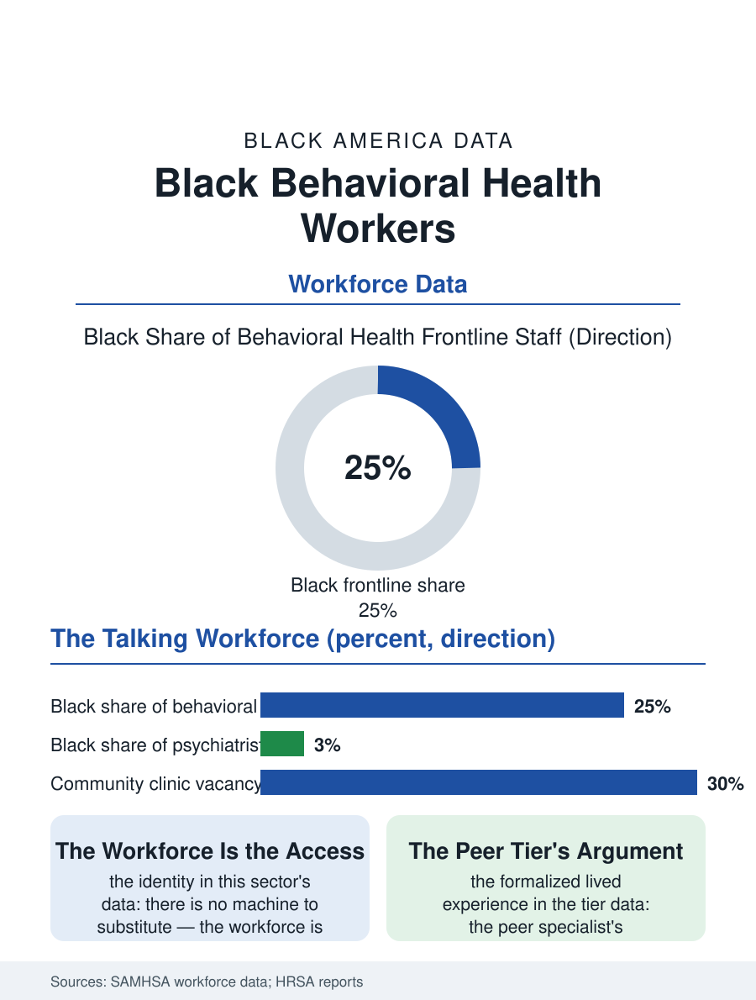

Black Employment
The Workforce Is the Access: Black Behavioral Health Workers
The workforce is the service in the talking cure, most Black at the peer tier, thinnest at the psychiatrist's summit, and short everywhere. The behavioral file.

The behavioral health workforce, the counselors, social workers, and technicians who staff the mental health and addiction systems, is among the most Black of the health professions at its frontline tiers and among the most strained, its vacancies and turnover the mental health access file's binding constraint. This article reads the behavioral health workforce file.
Tiers of the Talking Cure
The workforce's ladder runs from the peer specialist, the certified role built on the worker's own recovery or caregiving history, through the bachelor's-level case manager and the master's-level licensed clinician to the prescribing psychiatrist at its summit, with the Black share falling at each rung in the pattern of the health files: the peer and case management tiers substantially Black in the urban systems' data, the licensed clinical tier thinner, the psychiatry residency's Black share in the low single digits in the profession's counts, so that the patient who reaches the system's summit meets its least representative tier. The settings file divides the workforce's conditions: the community mental health center, the public system's clinic, where the Black workforce concentrates and the caseloads and the salaries are the sector's floor; the hospital and the integrated system's better-resourced tiers; and the private practice, whose cash and insurance panels the access file describes, staffed by the workforce's most credentialed and least diverse tier, a distribution that makes the workforce's composition and the patient's access the same map read twice. The addiction file inside the workforce deserves its own line, because the substance use counselor's tier carries the additional credential of the recovery community's own, the counselor in recovery being the field's tradition and its evidence-informed practice at once, and the opioid era's workforce emergency, the counselors needed against the overdose file's curve, has made the tier's recruitment and its wage the public health budget's explicit line in the states that counted the gap honestly.
Caseloads, Burnout, and the Pipeline's Leak
The workforce's crisis is the file's current data: the vacancy and turnover rates in the community systems running at levels the administrators describe as the service's rationing mechanism, the waitlist being the vacancy made visible to the patient, with the causes in the workforce surveys being the salary's competition with every other employer of the master's degree, the caseload's acuity, and the documentation burden that the billing file imposes on the clinical hour. The pipeline's leak is the unpaid internship, the clinical hours for the license earned at the practicum's zero wage in the pattern of the other credential files, filtering the master's candidate by the cushion she carries, with the loan repayment programs, the National Health Service Corps' behavioral placements and the state funds, being the system's counterweights, their placements in the underserved systems doubling as the workforce's diversity instrument where the programs' data are kept. The telehealth era's redistribution, the clinician licensed in the scarcity state serving it from the abundance's suburb, is the file's live experiment, its licensing compacts' slow construction being the policy's pace.
The Workforce as the Access
The behavioral health file closes on the identity the workforce and the access share, because in this sector the workforce is the service: there is no machine, no drug, no procedure whose delivery substitutes for the hour with the clinician, so the workforce's count, composition, and endurance are the access file entire, and its underbuilding is the system's choice recorded in the waitlist's length. The peer tier is the file's growth and its argument, the lived experience credential formalizing the community's own healing labor into the system's paid ranks, with the Black peer workforce's share the tier's distinction and its supervision and wage files the tier's unfinished business. The licensing boards count the clinicians each cycle, their numbers rising against the demand's faster rise. The file's last entry is the community clinic's waiting room at the hour the group ends, the clinician's day already double-booked past the evening, in the system whose whole capacity is the people in its rooms, whose shortage is therefore not a market's accident but a budget's decision, renewed annually in the appropriations that fund the seats the patients are waiting in. The seats are the appropriation; the appropriation is the access.
More in Black Employment
The Black Unemployment Rate: The Two-to-One Pattern
Black unemployment runs at roughly twice the White rate — 5.5 percent against 3.3 percent in annual averages — a ratio stable across five decades of federal data. How it is measured and why it persists.
Black Median Weekly Earnings: The 80-Cent Ratio
Black full-time workers earn a median of about $900 a week — roughly 80 cents for every dollar White workers earn. The BLS earnings data by group, gender, and occupation.
Black Labor Force Participation: Working at National Rates
Black labor force participation runs at roughly the national rate — and Black women participate at higher rates than White women. The BLS participation data.
Source: Substance Abuse and Mental Health Services Administration workforce data; Health Resources and Services Administration behavioral health workforce reports.